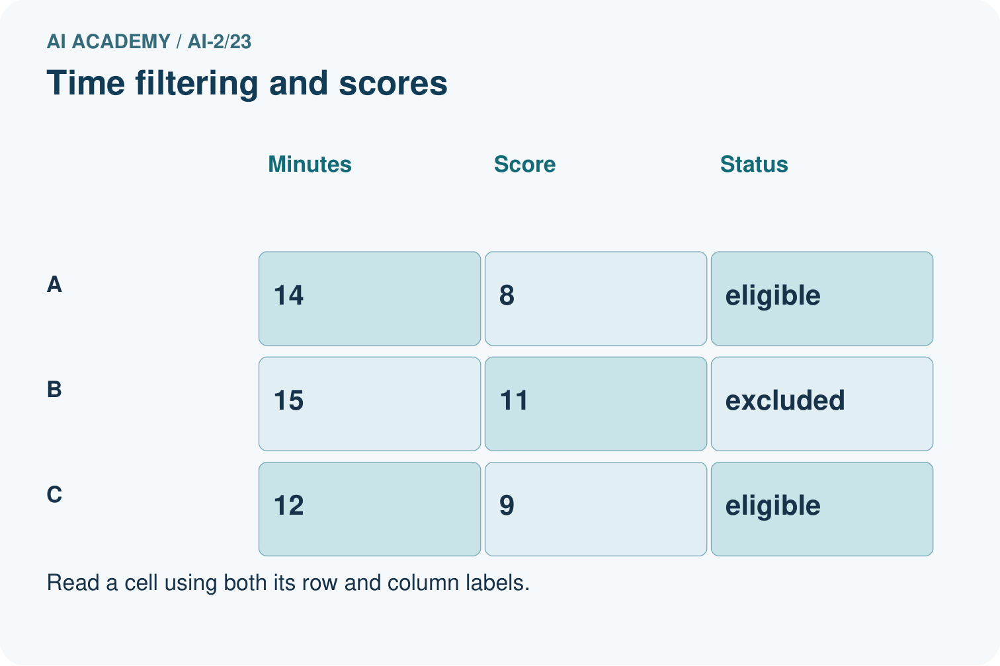
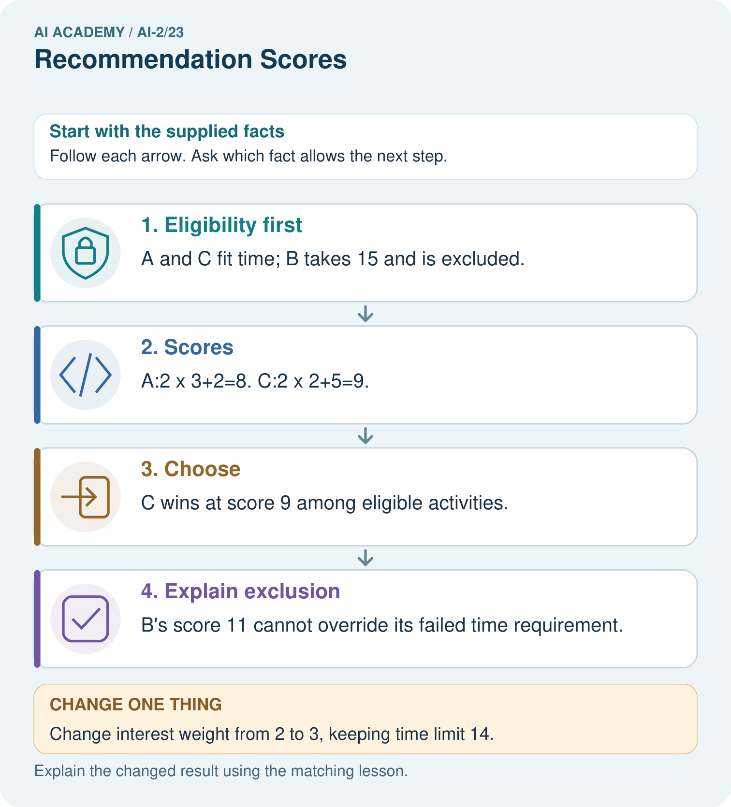

AI Academy · Level 2 · Grade 7 · Week 23 · Teacher guide
Recommendation Scores
Learn to understand, design, build, test and explain AI systems responsibly.
Project: Transparent Book Recommender
Teacher guide · 1 of 6
Recommendation Scores
Teach the learning cycle
Primary target: Compute a weighted score
| Session | Sequence and minutes | Resources |
|---|---|---|
| Session 1 · Understand · 45 min | 0–7: recall and prerequisite; 7–15: inspect the concrete case and predict; 15–30: teacher models the worked trace; 30–40: learners explain a step using the text and visual; 40–45: check the core idea. | Sections 1–6; record the brief recall in the workbook. |
| Session 2 · Practise · 45 min | 0–5: retrieve the procedure; 5–15: W2 completion practice; 15–23: explain and check with a partner; 23–30: each learner answers the misconception check; 30–40: targeted reteaching or a harder variation; 40–45: prepare the investigation. | Sections 7–10; use the matching workbook W2 and misconception check. |
| Session 3 · Investigate and transfer · 45 min | 0–5: retrieve the decision rule; 5–20: investigate or trace; 20–30: start the independent case; 30–38: connect the project; 38–43: act on feedback; 43–45: plan the return check. | Sections 9 and 11–14. Give extra time to finish the full task set; use Section 15 when the week includes a coding lab. |
This is a starting allocation of 135 minutes, not a validated duration. Preserve all named topics. Schedule extra time for connected examples, the full investigation, independent cases and project building. Repeated copies of a case share one recorded attempt; they are not new evidence.
Retrieval answer guidance
Nearest Neighbor Reasoning
Without opening the old lesson, explain one key idea from Nearest Neighbor Reasoning. Give an example and a mistake that the idea helps you avoid.
Look for: Compute absolute distances and rank training neighbours
Reference example, not the only acceptable wording: Distances to A,B,C,D,E are 1,1,5,7,9 cm. A and B are equally far from 3 on the numeric feature; their labels do not enter the distance calculation.
Repair Bias in Data
Without opening the old lesson, explain one key idea from Repair Bias in Data. Give an example and a mistake that the idea helps you avoid.
Look for: Identify selection and coverage bias
Reference example, not the only acceptable wording: Afternoon or evening visitors, and people unable to attend in the morning.
Noise and Outliers
Without opening the old lesson, explain one key idea from Noise and Outliers. Give an example and a mistake that the idea helps you avoid.
Look for: Calculate mean and median
Reference example, not the only acceptable wording: Sum 30 divided by 5 gives 6.
Use the student module and workbook section with this exact week title. The worked case, independent question and answers below form one aligned lesson sequence.
What the learner must demonstrate
Score=3×genreMatch+2×short+illustrated. Compute A=[1,0,1], B=[0,1,1], C=[1,1,0]. A reader now requires illustrations. Which book wins after applying that constraint?
Concept to explain
A weighted score expresses priorities but also embeds choices.
| Term | Meaning |
|---|---|
| weight | A multiplier controlling how strongly a feature or value contributes to a calculation. |
| score | A numerical value assigned using a specified rule; it is not automatically a probability. |
| rank | Place candidates in an order using a declared comparison rule. |
| tradeoff | A situation where improving one desired property can make another harder to achieve. |
Prepare the class
Use the supplied scenario, student illustrations and blank paper. For numeric work, offer counters or a calculator after learners show the setup. Fictional records are supplied; personal data and paid accounts are unnecessary.
Allow 80 minutes: recall 8; explanation 12; worked demonstration 15; guided practice 20; independent assessment 15; project and reflection 10. Extend the lab into a second session when needed.
Preparation for the connected explanation
Teach Week 23 as a two-session investigation using fictional data. A fictional activity chooser uses enjoyment and learning ratings from 0 to 5. Its score is 2 times enjoyment plus learning. The activity must also take at most 20 minutes. Duration is a hard requirement; a high score cannot compensate for exceeding it. Assess the three stated outcomes through the independent task, not by copying the worked result.
Readiness answer
A gap of 2.
Python 3 editor with a fresh local practice file
Paper trace table and the student workbook
Fictional input records from this lesson; no real student identifiers
End goal for the pictorial case
By the end, I can rank only eligible options with a transparent weighted score.
This added worked case illustrates the week’s main idea. Retain all original and connected topics; schedule its practice within the teaching cycle.
Teacher guide · 2 of 6
Explain the mechanism
Explain the mechanism
Input → Process → Output
Trace the information. At each stage, ask what changed and how you could test it.
Which stage could fail even when the other two are correct? Explain:
Predict first. Then check each step. A correct answer without visible reasoning is incomplete evidence.
1. Score = 3×genre match + 2×difficulty match + 1×length match.
2. Book A matches genre and length: 3+0+1=4.
3. Book B matches difficulty and length: 0+2+1=3.
4. A ranks first for these weights—not as a universal best book.
Recalculate, retrace, or restate the reasoning in your own representation:
CHECK Did the evidence answer the exact question? Did the total, path, or source record stay consistent?
Concrete teaching case
Score=2 times genre match + length match. A matches both, B genre only, C length only.
Score and rank.
Exact explanation to model
A=3, B=2, C=1. Weights encode a chosen preference, not universal reader truth.
Explain the added worked example
A fictional activity chooser uses enjoyment and learning ratings from 0 to 5. Its score is 2 times enjoyment plus learning. The activity must also take at most 20 minutes. Duration is a hard requirement; a high score cannot compensate for exceeding it.
Only A is printed, with score 10. If B took 20 minutes it would qualify and have the higher score 11. The inclusive boundary matters. Ratings and weights are invented for practice and require justification before use in a real decision.
Key terms
| Term | Meaning |
|---|---|
| Weight | A multiplier expressing the importance assigned to a feature |
| Score | A number calculated to compare options |
| Constraint | A requirement an option must meet |
| Tradeoff | Improving one preference while giving up another |
Model the reasoning aloud
Use the complete worked example below before asking learners to complete W2. Reveal a small part, invite a prediction, then explain the deciding step. These teacher notes contain solutions; do not reveal the independent case answer during modelling.
| Thinking move | Teacher prompt |
|---|---|
| Plan | What is given? What is the question? Which procedure fits these facts? |
| Do | Point to each input and intermediate step in the worked trace. Name the rule that allows the next step. |
| Check | Does the output answer the question? Which assumption or limitation prevents a larger claim? |
Use the diagram and verbal explanation together. Ask learners to match a sentence to a specific visual step; do not assign learners fixed visual or auditory learning styles.
A pictorial worked case: Recommendation Scores
A fictional book-activity chooser has a 14-minute limit.
The facts we will use
Score=2×interest+practice. A=(interest3,practice2,time14); B=(4,3,15); C=(2,5,12).
Require whole nonnegative feature values; time must be at most the limit. Highest score wins; tie by ID.


Read the picture one step at a time
Why this result follows
A score combines preferences according to explicitly chosen weights; it does not erase hard constraints. Computing a high score for an excluded item can be useful in an audit, but it must not allow that item back into the candidate set. Store both eligibility reasons and score components for explanations.
What this example does not establish
Toy interest scores are supplied inputs, not measured enjoyment or a universal definition of a good activity.
Change one thing in the pictured case
Change: Change interest weight from 2 to 3, keeping time limit 14.
Prediction: A scores 11; C also scores 11; tie-by-ID chooses A.
Reason: B remains too long; changing preferences changes only ranking of A and C.
Ask while showing the picture
Cover the result. Ask learners to name the inputs and predict the next step. Uncover one step, connect the icon to the actual procedure, and explain its evidence. Then change the supplied condition and compare. The picture is a representation; it does not document execution of a real AI model.
Teacher guide · 3 of 6
Demonstrate and guide practice
Demonstrate and guide practice
Board sequence
Write the given facts: Score=2 times genre match + length match. A matches both, B genre only, C length only.
Write the question to explain: Score and rank.
Reveal after predictions: A=3, B=2, C=1. Weights encode a chosen preference, not universal reader truth.
Keep for an independent attempt: A recommender gives 3 points for topic match and 1 for difficulty match. Book A matches topic only; B matches difficulty only. Compute scores and justify the ranking.
Classroom dialogue
Ask: Which facts are given, and which would we have to assume? Learners mark relevant details before discussing answers.
Say: Predict first. Show the rule, information path or calculation that would produce the result. A correct guess is not yet an explanation.
Reveal reasoning one step at a time. Explain why a tempting alternative fails. Write units and denominators for arithmetic, trace conditions for decisions, and identify supporting sources for claims.
In pairs, one learner solves while the other checks evidence; exchange roles. Remove the worked answer before independent assessment.
Model these guided questions
A scores 8 and B scores 13. B remains excluded at 25 minutes. Exit: First scores A 9, B 8 so A wins. Second scores A 6, B 10 so B wins. Explain the preference change.
Case-specific teaching sequence
| Stage | Teacher action |
|---|---|
| Session 1 start to 7 minutes | Retrieve the prerequisite and explain the purpose in the opening section. |
| 7 to 20 minutes | Read the worked example and diagram; ask learners to trace each step aloud. |
| 20 to 33 minutes | Complete W1 and W2, then compare predictions with observed results. |
| 33 to 45 minutes | Collect the guided prediction before running; discuss a mismatch and its cause. |
| Session 2 start to 8 minutes | Retrieve the main rule without showing the previous answer. |
| 8 to 20 minutes | Use W3 to diagnose and repair the stated failure; rerun an earlier case. |
| 20 to 35 minutes | Collect W4 independently, including code or plan, predictions and explanations, before hints. |
| 35 to 45 minutes | Discuss W5 and the exit; use the fresh retry when support was needed. |
Reduce help deliberately
Completion task: Which durations 19, 20, 21 qualify under at most 20?
Teacher check: 19 and 20 qualify; 21 does not.
Start by identifying the given inputs together. Leave the intermediate steps blank. If needed, model one step, then withdraw that help on the next step. Move to a full trace only when the partial trace is understood. For partners, alternate explainer and checker; collect a response from every learner before discussion.
Individual reasoning check
Use the worked case for Weighted scores and constraints. Proposed explanation: “A successful run proves the conclusion”. Decide whether this explanation is supported. Point to the step or supplied fact that decides; explain your repair if needed.
Expected correction: Weights represent preferences, not a discovered truth. Explain who chose them and test whether small changes alter the recommendation. Avoid claiming that a larger score proves greater educational value.
Collect explanations, not only yes/no votes. If a misunderstanding is common, re-model the relevant step for the class. If it affects a few learners, give a short targeted group explanation while others solve a more demanding variation.
Pictorial practice question
Why does B not become the winner when its score is largest?
Reasoned teacher answer
Its time 15 exceeds the 14-minute maximum, so it is ineligible before ranking.
Changed-case reasoning: A scores 11; C also scores 11; tie-by-ID chooses A. B remains too long; changing preferences changes only ranking of A and C.
Collect each learner’s explanation before discussion. Use the first missing connection between input, deciding step and result to choose support. This question is worked-case practice, not fresh mastery evidence.
Teacher guide · 4 of 6
Run the weekly evidence lab
Run the weekly evidence lab
Words You Can Use to Reason
A definition matters when you can recognize the idea, use it, and contrast it with a near-miss.
Predict → Test → Record → Explain
Keep expected and actual results separate. Surprises are useful data when recorded honestly.
Create two reader profiles with different weights, calculate every term, total, rank, and explain why the order changes.
What did the hardest test teach you that the normal test did not?
Make the lab runnable
Use the concrete case as the shared normal case and the independent question as a second case. Each pair creates a boundary or missing-information case and predicts its result before testing. Keep the expected result separate from an observed mistake.
| Record | What to capture |
|---|---|
| Input or evidence | Exact data, instruction or claim |
| Expected result | Answer or safe fallback declared before the run |
| Observed result | Actual result, including errors |
| Explanation | Rule, calculation or evidence explaining the outcome |
| Next test | One justified change and a new prediction |
Diagnose and reteach
For guessing, return to given facts and request a trace. For vocabulary without application, use one example and one non-example. For arithmetic errors, check the setup before the calculation. Finish with a different uncoached case before recording mastery.
Address these additional misconceptions
A successful run proves the conclusion: Weights represent preferences, not a discovered truth. Explain who chose them and test whether small changes alter the recommendation. Avoid claiming that a larger score proves greater educational value.
Matching the example is enough: Require the new W4 case, explicit predictions and an explanation. Fresh retry: limit 10, X (fun 1, learning 5, minutes 9), Y (3,2,10), Z (5,5,11). Scores 7, 8, 15; choose Y, exclude Z.
A convenient shortcut preserves meaning: Choosing the highest score and only then ignoring its duration breaks the requirement. Filter for eligibility first. If no item qualifies, report no eligible option instead of relaxing a requirement silently.
Match the support to the first error
| What the response shows | Next teaching action |
|---|---|
| Missing or misread facts | Read the case aloud, mark supplied versus unknown facts, and let the learner restate it. |
| Wrong procedure | Return to the deciding step in the worked case. Contrast it with the proposed incorrect explanation. |
| Arithmetic or implementation error | Trace intermediate values or lines; preserve the first mismatch and retry that step. |
| Correct result without a reason | Ask for a trace and a changed case before marking independent understanding. |
| An unsupported wider claim | Ask which supplied evidence supports the claim and which further observation would be needed. |
Offer an oral explanation, drawing, enlarged visual or fewer examples when that removes a reading/writing barrier. Keep the same reasoning goal. Stretch secure learners by changing a boundary or assumption and asking them to defend the effect, not simply by assigning more of the same questions.
Teacher guide · 5 of 6
Assess and explain the answers
Assess and explain the answers
Worked case answer
A=3, B=2, C=1. Weights encode a chosen preference, not universal reader truth.
Independent question
A recommender gives 3 points for topic match and 1 for difficulty match. Book A matches topic only; B matches difficulty only. Compute scores and justify the ranking.
Expected independent answer
A scores 3 and B scores 1, so A ranks first. The ranking reflects the chosen weights; different priorities could change them.
What counts as evidence
| Criterion | 0 points | 1 point | 2 points |
|---|---|---|---|
| Result | Incorrect or absent | Partly correct | Correct with necessary conditions |
| Reasoning | No supporting trace | Some steps | Clear mechanism, calculation or source support |
| Limit | Overclaims certainty | Vague limitation | Relevant uncertainty or missing fact |
| Transfer | Copies without adapting | Adapts with prompts | Solves a changed case independently |
Use 6/8 as a classroom checkpoint, with 2 required for both Result and Reasoning. This is a proposed teaching rule, not a validated certification threshold. Do not count a coached answer as independent mastery; correct unsafe or unsupported claims regardless of total.
Feedback
Ask the learner to find the evidence that challenges this claim: “Recommendation scores are objective preferences of all readers.” Keep the first attempt and an uncoached retry separate.
Original transfer answer
Scores A=4, B=3, C=5. With illustrated required, C is excluded and A wins. A high score cannot compensate for a mandatory requirement unless the requirement has explicitly changed.
Explanations for the additional workbook examples
W1 Calculate a score
An eligible activity has fun 2 and learning 4. Use 2 * fun + learning.
Score 8.
Substitute each rating into its named role: 2 * fun + learning = 2 * 2 + 4 = 4 + 4 = 8. Eligibility is supplied in this task, so this calculation ranks an already permitted option. The score is a result of the chosen preference rule, not a measured educational benefit.
W2 Check a boundary
Which durations 19, 20, 21 qualify under at most 20?
19 and 20 qualify; 21 does not.
At most 20 means minutes <= 20. The value 19 is below the limit and 20 is exactly at it, so both qualify. The value 21 is above it and is excluded. An answer that rejects 20 has changed the inclusive requirement into a strict one.
W3 Repair selection
An ineligible item scores 15 and an eligible item scores 9. Which should be offered under the stated policy?
Offer the eligible item with score 9. The constraint is applied before ranking.
W4 Choose independently
Limit is 15 minutes. A has fun 3, learning 4, minutes 15; B has 5, 1, 16; C has 2, 5, 12. Calculate scores with 2 * fun + learning and choose.
Scores A 10, B 11, C 9. B is excluded. A is highest among eligible options.
W5 Test sensitivity
For eligible A (fun 4, learning 1) and B (fun 2, learning 4), compare weights (2,1) with (1,2).
First scores A 9, B 8 so A wins. Second scores A 6, B 10 so B wins. Explain the preference change.
Assess independent transfer
Selected case: Limit is 15 minutes. A has fun 3, learning 4, minutes 15; B has 5, 1, 16; C has 2, 5, 12. Calculate scores with 2 * fun + learning and choose.
Selected case answer
Scores A 10, B 11, C 9. B is excluded. A is highest among eligible options.
| Dimension | Evidence required |
|---|---|
| Explanation | Names the applicable idea or procedure and ties it to the supplied facts. |
| Trace and result | Preserves the given inputs and shows the relevant intermediate steps; distinguishes a prediction from an observed execution. |
| Limits | States the assumptions, missing evidence or conditions under which the result would change. |
Record each dimension as not yet, with support, or independent. Accept a valid alternative procedure with a defensible trace. Do not penalise an honestly recorded model failure if the learner correctly explains its evidence and limits.
Feedback that the learner uses
Name the earliest unsupported step and give one action to repair it. Have the learner make that repair now and explain why. Then assess the relevant skill on a fresh, fully specified case. Confirm it was not previously practised with feedback; solve and check the new case before assigning it. A follow-up design prompt is a starting brief, not automatically an equivalent test.
Teacher guide · 6 of 6
Connect and extend learning
Connect and extend learning
Transparent Book Recommender
Publish the features, weights, raw scores, and reason for the top result.
Keep the decision, input, result, explanation and remaining limitation in the project evidence record. Retrieve this record next week rather than restarting the project.
Support and stretch
Trace one record or condition at a time with counters and labelled columns. Stretch: introduce a tie, boundary or missing field and declare its handling policy before rerunning.
Exit reflection
Ask for one decision the learner can now justify and one situation requiring more evidence or human review. Confidence ratings are separate from correct independent performance.
Bridge to the next week
Next: Week 24: Feedback Loops. Retrieve today’s evidence and identify what carries forward and what is new.
Support and fresh reassessment
Use separate eligibility and score columns. Extension: add a documented tie rule and test tied eligible items.
Independent W4 evidence: Scores A 10, B 11, C 9. B is excluded. A is highest among eligible options. Record whether the learner needed no help, a hint or explanation. Fresh retry: limit 10, X (fun 1, learning 5, minutes 9), Y (3,2,10), Z (5,5,11). Scores 7, 8, 15; choose Y, exclude Z.
Next week: Implementing a recommender. Reuse this week's explicit contracts and evidence.
Plan the delayed return
Suggested return points in this level: ai-2/24, ai-2/26, ai-2/29. Use actual classroom dates, adjusting for holidays and gaps. One, three and six teaching weeks are scheduling choices, not a claimed optimal spacing.
At a delayed check, ask for the idea from memory and a changed application. Compare with the earlier independent response and record support used. For a new level, revisit the previous capstone before checking the new prerequisites.
| Record | Teacher evidence |
|---|---|
| Learner code and date | |
| Concept and case used; prior exposure | |
| Explanation / trace / limits | |
| Support and first repair | |
| Changed case and delayed outcome | |
| Next teaching action |
Use the evidence to choose reteaching or the next step. A completed page, confidence rating or attractive project does not by itself demonstrate understanding.
Project evidence from this case
Publish the recommender’s constraints, score formula and tie rule; include component-level reasons in each suggestion.